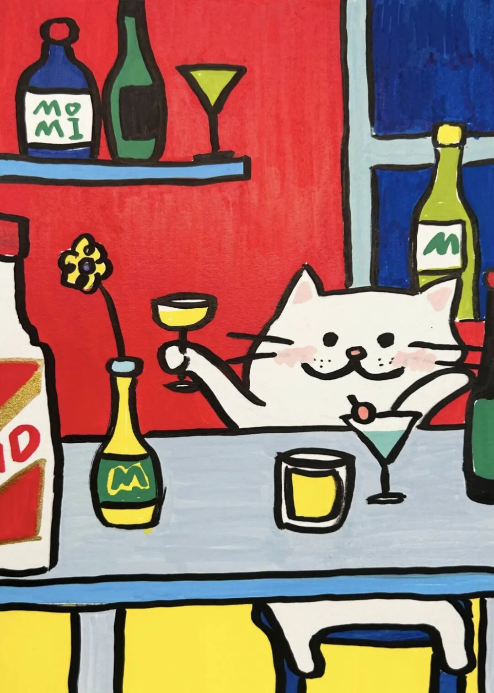
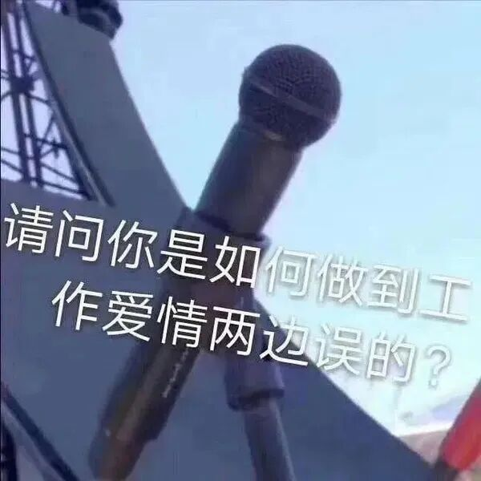
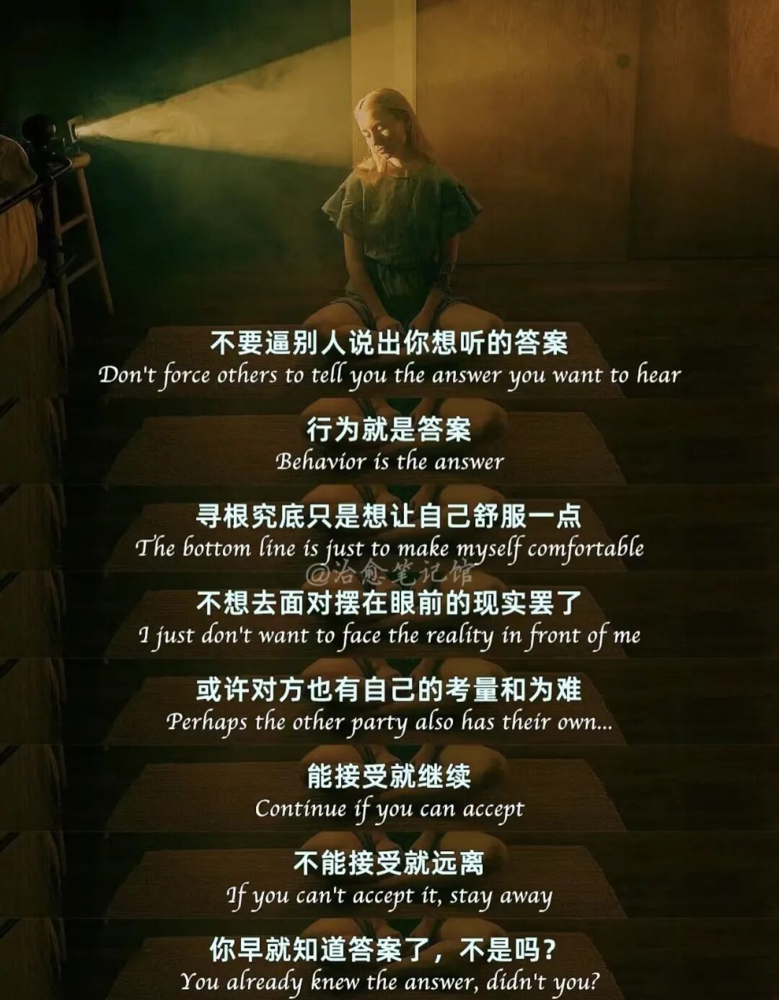
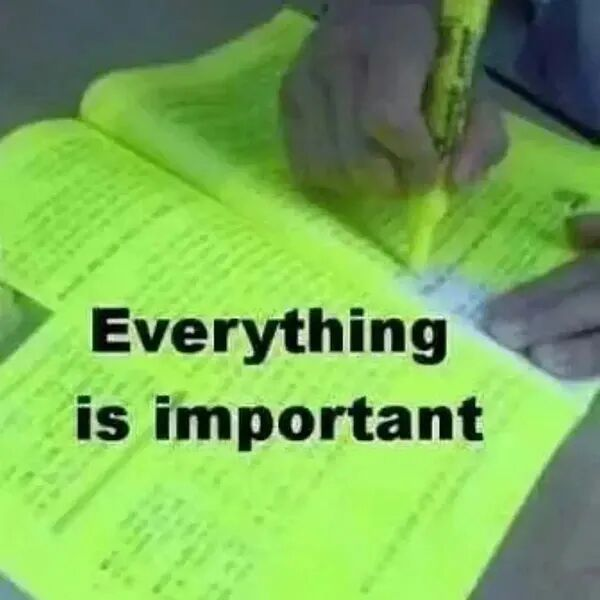
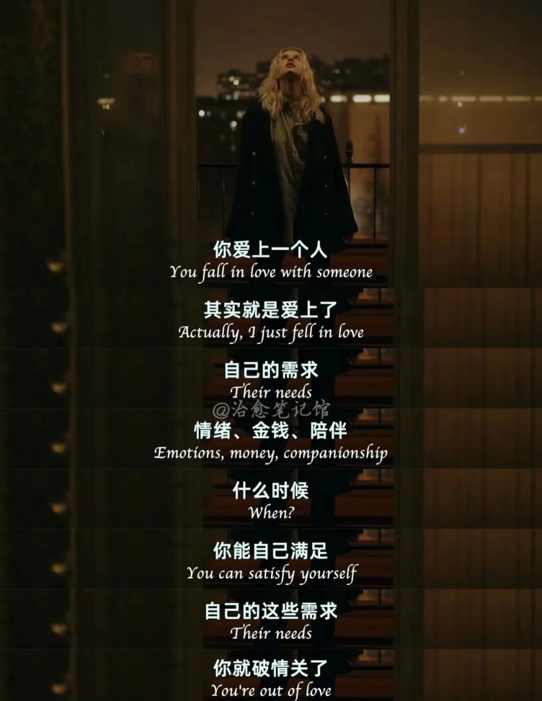
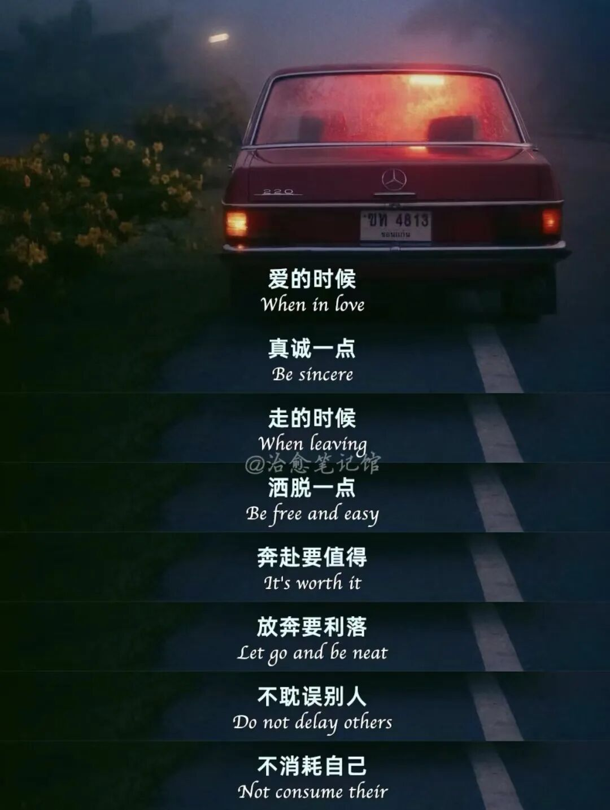
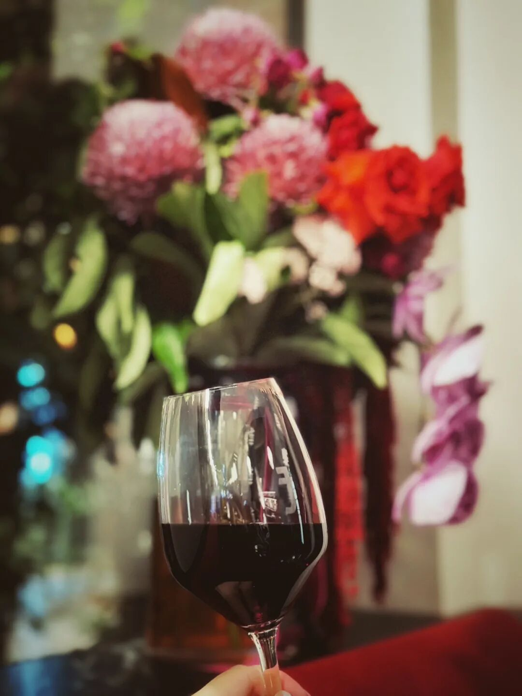

上海降温雨夜的中年酒局
"
从6月开始逆行的土星，
这个月终于在双鱼座恢复顺行。
土星是衰老，是宿命，是不可抗拒。
但正因如此，人类也有能力从有限的生命中体悟，
藉此获得更为丰盛的生命体验。
...
周末闷得慌，出门参加了几场中年酒局。可能是太久没有出来玩了，也许是这几年行情不好，中年人都学会了自谦和自洽，席间每一个中年男人都呈现出叫人欢喜的样子，和几年前（详见中年人酒局及股市生存手册）很不一样。这一次的中年男子，他们看似很安静，但你说话的时候，会很认真地提问，甚至给出设身处地为你着想的建议；他们反扣着棒球帽，穿潮牌买手店里剪裁优良又舒适的纯棉T，是很浅的天蓝色，和那些永远穿黑灰色T的中年发福男区别开来；他们说很流利的英文，配上好脾气的笑容，和他们相处很舒服，久处不厌。因此，一贯自律十点前回家美容的我，决定留下再喝一杯。

当然，席间他们聊的话题依然很中年：
酒吧老板抱怨只身在国外的老婆和他吵架，把他拉黑了，目前只能靠中间人建了个群来保持沟通，确认对方还活着。他向每一位客人诉说这个让他一晚上吃不下饭的故事，由于我是第一个到的，足足听了四遍。
老客人听完问：“你怎么又被拉黑了？”

他们在婚姻中互相在乎，又互相伤害。像两个初始时间一样的时钟，慢慢变成不一样的时间。感情也是一样，一开始是同频同步的，共同往一个方向在努力，因为经历了一些事情，逐渐开始错位。
其实人在争吵、发脾气的时候，还是希望去解决一些问题的。真正的中年夫妻，是过去时的人，是很平静的。
所以，如果现在再问想和什么样的人在一起？我会觉得，再美的人也会失去光泽，再多财富最终也抵不过内心的真实感受。人生走完一大段路，遇到了太多帅哥美女，但事实上，过了一阵子后，你只想跟能逗你笑的人在一起。

陆家嘴金融男Z先生离婚后潜心做事业，已经是MD的他今年冲了一把，把原本2亿美金的年利润活生生做到1.5亿。但据他所说，董事局挺满意的，至少不亏。
所以，中年人只要肯放过自己总是好的。他出差回来就找大家喝酒抽雪茄，我送给他一顶红色法拉利帽子，他说以前看F1的时候掉了，一直想再要一顶，所以很喜欢。我仿佛看到四十多岁的男人心里孩子气的那部分，只是年轻人的保护机制可能是一层坚硬的壳，凭着坚强、倔强，或者单纯的拒绝，在难关中穿梭。而中年人编织了一张更加复杂的网，这张网看似允许万物堕入，但几乎进入者都中途迷路，只相信了自己断章取义的感受。无人能抵达他最本真的核心，只有他自己在网中慢慢观察、推敲、衡量，以此保护自我。

Z先生除了依旧喜欢带红色棒球帽，还会经常做一些“孩子气”的事情。在担任某上市公司监事的时候，主动申报了挂职费，以至于其他董监高因此都一起陪他纳税。
大家都说他这样做是不是会让同事不开心，太不近人情了，以至于我们在职场中有一百个瞬间想和他一样Say No… 但还是缺那么一点儿勇气。
其实，小到去商场里购物，大到一个关于未来的诺言和设想，你都很难说服一个中年人简单地去相信这个世界了。正因如此，在怀疑过一切，衡量了所有利弊后，像Z先生这样依然坚定，单纯地相信着自己的人，会格外让人心动。

我的好友F小姐是个大美女，她拥有那种大部分男人第一眼看到会没有信心要微信的无敌气场，但几个月后又念念不忘，忍不住辗转约她吃饭的女明星长相。
年轻时候她和一个破落富二代闪婚，当年是有过爱情的吧？可就是这样相爱的两个人，最后决绝地选择做室友。他们都觉得，那个和自己最亲密的人，其实是不懂自己的。
F小姐喝一杯酒，苦闷地说最近又有好几个比自己小七八岁的男孩子约她，他们有的约她滑雪，有的约她跳伞，有的约她蹦迪。但她再也不想和同龄或更小的男孩子在一起，她问是不是自己老了？
我说，你和老公以及这些尚未成熟的男孩子的相处其实是一种向下兼容，要努力降低自己才能和对方同频。

后来她和一个成熟男人约会，双方都感觉遇见同频的soulmate。男人懂得相处的真谛，主动给他准备礼物，带她去浪漫的餐厅，把寻常日子过得充满仪式感。而她的老公，连一起躺在床上问他一句话都懒得回答。她想问老公，你还爱我吗？我说杨绛先生曾经写过：“礼物和爱都不要伸手去要，主动给的是偏爱，伸手要的是施舍，没有人会不懂浪漫，只是看他用不用心。爱和敷衍是两码事，仪式感跟穷没关系，爱你的人总怕给你不够，不爱你的人生怕你要的太多。”但是，J小姐和成熟男人都不想再踏入婚姻了。两个人都经历了婚姻的失败，因此对爱一个人这件事，变得谨小慎微。年轻时有很多时间，可以爱就爱了，再让时间去验证爱。当人生来到下半场，顺序可能就反过来，当时间把爱验证到一定程度了，心动的阀门才会被开启。中年人的心动，有时候就是关于等待与陪伴的积累。本质上不再仅仅是关于爱情和多巴胺，它更多地关于岁月和时间。点到为止才弥足可贵。

中年人很难心动
也没有痛快去爱的勇气但我祝愿你无论在什么年龄都不要丧失爱上另一个人的能力
…

2023.11.05
——END